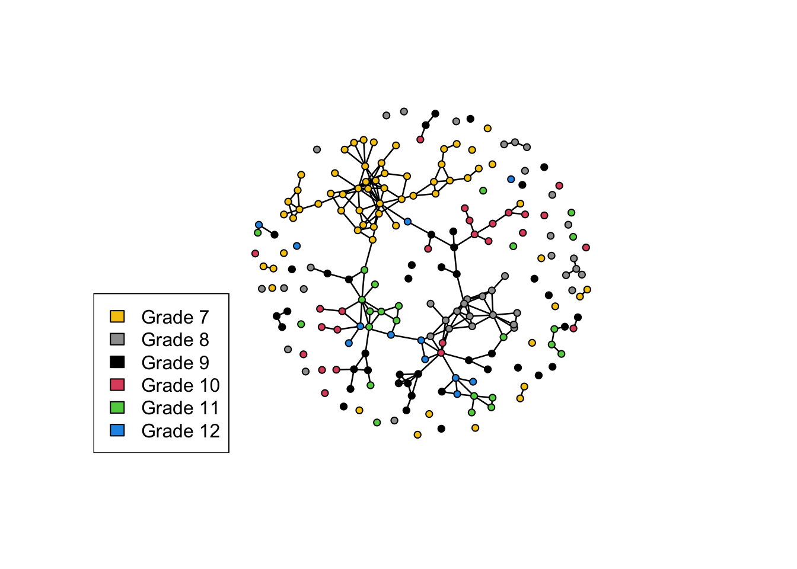

Warning: package 'network' was built under R version 4.4.3
'network' 1.20.0 (2026-02-06), part of the Statnet Project
* 'news(package="network")' for changes since last version
* 'citation("network")' for citation information
* 'https://statnet.org' for help, support, and other information
library(ergm)
Warning: package 'ergm' was built under R version 4.4.3
'ergm' 4.12.0 (2026-02-17), part of the Statnet Project
* 'news(package="ergm")' for changes since last version
* 'citation("ergm")' for citation information
* 'https://statnet.org' for help, support, and other information
'ergm' 4 is a major update that introduces some backwards-incompatible
changes. Please type 'news(package="ergm")' for a list of major
changes.
library(sna)
Loading required package: statnet.common
Warning: package 'statnet.common' was built under R version 4.4.3
Attaching package: 'statnet.common'
The following objects are masked from 'package:base':
attr, order, replace
sna: Tools for Social Network Analysis
Version 2.8 created on 2024-09-07.
copyright (c) 2005, Carter T. Butts, University of California-Irvine
For citation information, type citation("sna").
Type help(package="sna") to get started.
library(Bergm)set.seed(42)
We adopt the notation and syntax of the official Statnet ERGM workshop tutorial. More details on syntax, troubleshooting, etc are documented there and in the documentation. Below, we “borrow” an example from the tutorial and expand on the math/stats/theory quite a bit.
Faux Mesa High
We will use a simulated mutual friendship network of a faux high school from the ergm package. There are 205 students (nodes) and 203 reported friendships (edges). Vertex attributes include Grade, Race, and Sex. Our substantive question: what explains friendship ties at this school? Is it just the overall density of edges, or do some groups (e.g. grade, race, sex) have more friendships overall (activity)? Do some groups form ties disproportionately within themselves (homophily)?
plot(mesa, vertex.col ="Grade")legend("bottomleft", fill =7:12,legend =paste("Grade", 7:12))

Faux Mesa High
We cannot apply the usual statistical tests (e.g. regression) since those require independent observations, and intuitively we know that network ties are not independent (e.g., my own friends are likely to be friends with each other—this alone interlocks the entire network). Instead, we view the observed network as one possible realization of real social processes subject to stochastic noise, and we aim to infer a distribution of plausible realizations under those processes. Unlike “standard” inference in which we infer properties about a population based on a sample, we are using our full population (or at least a snapshot of it) to infer a “distribution of alternate realities.”
We might like to consider the distribution of all graphs with properties similar to the observed network, like number of edges or triangles, etc, where “more similar = more likely”, but enumeration of this set would be impossible (e.g., there are about \(10^{500}\) ways to assign exactly 203 friendships to 205 students, as compared to about \(10^{80}\) atoms in the universe, before even considering slight deviations like \(\pm1, \pm2, \ldots\) friendships). Instead, we use a process which generates random graphs that are representative of this distribution.
ERGMs
Informal “Derivation”
Let \(Y\) be the random variable which represents our theoretical distribution of networks. Let’s image that the probability of network \(y\) depends on two things:
\(g_1(y)\): the number of edges in \(y\)
\(g_2(y)\): the number of triangles in \(y\)
We might naively try to fit the probability as linear, \[\theta_1g_1(y) + \theta_2g_2(y),\] but this is clearly problematic since it can take both positive and negative values (e.g., if we want to penalize triangles then \(\theta_2<0\)). Instead, we fit the (unnormaliezd) log-probability as linear, meaning
\[\Pr(Y=y) \;\propto\; \exp\{\theta_1g_1(y) + \theta_2g_2(y)\}.\] To get true probabilities, we normalize: \[\Pr(Y=y) \;=\; \frac{\exp\{\theta_1g_1(y) + \theta_2g_2(y)\}}{\sum_{y'}\exp\{\theta_1g_1(y') + \theta_2g_2(y')\}}.\]
Formal ERGM Model
Generalizing, an (unweighted) exponential random graph model (ERGM) assign probabilities
where \(g(y) = (g_1(y), \ldots, g_p(y))^\top\) is a vector of sufficient statistics (usually counts of structural features) and \(\theta=(\theta_1, \ldots, \theta_p)^\top\) is the parameter vector. Notably, \(k(\theta)\) is typically impossible to compute, since the sum over \(y'\) is intractable.
A fairly technical theorem by Hammersley and Clifford states, loosely, that many network models can be expressed in such form.
Interpretation of model parameters
Let \(y_{-ij}\) denote an arbitrary but fixed network with the value of edge \(ij\) left unspecified.
\(y^+\) is defined as \(y_{-ij}\) with \(y_{ij}=1\), and
\(y^-\) is defined as \(y_{-ij}\) with \(y_{ij}=0\).
Define the change statistic as \[\delta_{ij}(y):= g(y^+)-g(y^-).\]
Importantly, we can divide probabilities in the formula above (and cancel the intractable \(k(\theta)\) term!) and derive
which closely resembles the interpretation of coefficients in logistic regression. The biggest difference is the logit function now represents conditional log-odds of an edge holding the rest of the network fixed; notably, we typically cannot say we are holding the other covariates fixed, since changing one edge may change several covariates.
For example, suppose as before that \[\Pr(Y=y) \;=\; \frac{\exp\{\theta_1g_1(y) + \theta_2g_2(y)\}}{\sum_{y'}\exp\{\theta_1g_1(y') + \theta_2g_2(y')\}},\] where \(g_1\), \(g_2\) count edges and triangles. Then \[\operatorname{logit} \Pr(Y_{ij}=1|Y_{-ij}=y_{-ij}) = \theta^\top \delta_{ij}(y) = \theta_1 \cdot 1 + \theta_2\cdot \#(\text{shared partners}),\] since adding the edge \(ij\) will create a triangle for every vertex \(k\) such that \(ik\) and \(jk\) are already edges. The conditional log-odds change depending on network structure!
Implementing ERGMs
We will fit three ERGMs on our data. Model 1 uses edges only and acts as a baseline. Model 2 follows the Statnet tutorial and further includes grade and race activity and homophily. After considering GOF for these models we will discuss Model 3, which includes triadic closure, but more on that later.
edges: total number of ties; controls overall density.
nodefactor("Grade") / nodefactor("Race"): differential activity; nodes in certain grades or racial groups may tend to have more (or fewer) friendships
nodematch("Grade", diff = TRUE) / nodematch("Race", diff = TRUE): differential homophily; nodes in certain grades or racial groups may tend to prefer within-group friendships; the diff = TRUE option allows for different propensities for within-group ties at each level of the attribute, rather than a shared homophily coefficient.
Models 1 and 2 include only dyad-independent terms; that is, for each pair \((i,j)\), the change statistics \(\delta_{ij}(y)\) depend only on nodes \(i\) and \(j\) (not who they are connected to). By default, ergm() targets maximum likelihood (MLE): it chooses \(\hat\theta\) to make the observed network \(y_{\text{obs}}\) as probable as possible under the model; i.e., \[ \hat{\theta} = \operatorname{argmax}_{\theta} \Pr(Y=y_{\text{obs}} \mid \theta).\] The details do not matter here, but we will need to pay attention to what algorithm(s) are being employed later for diagnostics. We’ll use default settings; see documentation for more options.
Model 1: edges only
fauxmodel.01<-ergm(mesa ~ edges)
Starting maximum pseudolikelihood estimation (MPLE):
Obtaining the responsible dyads.
Evaluating the predictor and response matrix.
Maximizing the pseudolikelihood.
Finished MPLE.
Evaluating log-likelihood at the estimate.
summary(fauxmodel.01)
Call:
ergm(formula = mesa ~ edges)
Maximum Likelihood Results:
Estimate Std. Error MCMC % z value Pr(>|z|)
edges -4.62502 0.07053 0 -65.58 <1e-04 ***
---
Signif. codes: 0 '***' 0.001 '**' 0.01 '*' 0.05 '.' 0.1 ' ' 1
Null Deviance: 28987 on 20910 degrees of freedom
Residual Deviance: 2286 on 20909 degrees of freedom
AIC: 2288 BIC: 2296 (Smaller is better. MC Std. Err. = 0)
This model matches total tie count only and ignores grade and race structure. Notice that the edges estimate is strongly negative since the network is relatively sparse. Because there is no dependence on other edges in this model, the (conditional) probability of any edge is \[\Pr(Y_{ij}=1)=\Pr(Y_{ij}=1 |Y_{-ij}=y_{-ij}) = \operatorname{logit}^{-1}(-4.62502)\simeq 0.0097,\] so every edge has a the same \(0.97\%\) chance of existing. (One can show that an Erds–R'enyi model with parameter \(p\) is equivalent to an edges-only ERGM with paremter \(\theta=\operatorname{logit}(p)\).)
The -Inf values are the result of a boundary problem. The possible values of \(g(y)\) exist in a vector space. If the observed statistics vector \(g(y_{\text{obs}})\) lies on or close to the boundary convex hull of the feasible statistics, the MLE may not exist or may be unstable. It’s easy to see why it failed here by looking at the original data.
table(mesa %v%"Race")
Black Hisp NatAm Other White
6 109 68 4 18
mixingmatrix(mesa, "Race")
Black Hisp NatAm Other White
Black 0 8 13 0 5
Hisp 8 53 41 1 22
NatAm 13 41 46 0 10
Other 0 1 0 0 0
White 5 22 10 0 4
Note: Marginal totals can be misleading for undirected mixing matrices.
There are only six Black students and four in the Other category in the original data, and the mixing matrix shows no within-group ties for those races. Hence the “infinite penalty.”
Goodness of fit
We used our single observed network \(y_{\text{obs}}\) to return point estimates \(\hat\theta\). We now ask whether networks simulated by parameters \(\hat\theta\) resemble \(y_{\text{obs}}\)on features beyond those explicitly forced by the fit. Internally, gof() uses Markov Chain Monte Carlo (MCMC) to simulate random graphs at the given \(\hat\theta\).
For Model 1 (edges only), GOF is predictably poor. We call gof() to simulate networks at \(\hat\theta\) and compare observed versus simulated distributions for degree, edgewise shared partners, and minimum geodesic distance. The solid lines marks \(y_{\text{obs}}\); box-plots summarize the simulations.
Homophily and activity terms do not describe structural clustering: if \(i\) is friends with \(j\), and \(j\) is friends with \(k\), then \(i\) and \(k\) are more likely to become friends (triadic closure).
We could add the raw triangle count as a sufficient statistic, but this is known to often cause degeneracy (probability mass collapses, and the ERGM places most of its probability on unrealistic networks, like nearly empty or nearly complete graphs). Instead, the geometrically weighted edgewise shared partnersgwesp is the standard way to reward ties between pairs who share mutual friends. We will use
gwesp(0.25, fixed = TRUE)
which specifies a fixed decay parameter of 0.25: going from 0 to 1 shared partners matters a lot, going from 1 to 2 shared partners adds a little more value, and every additional partner beyond continuse this diminishing return of value added. A decay parameters closer to 0 means a steeper / more extreme diminishing return curve.
Observed statistic(s) nodematch.Race.Black and nodematch.Race.Other are at their smallest attainable values. Their coefficients will be fixed at -Inf.
Starting maximum pseudolikelihood estimation (MPLE):
Obtaining the responsible dyads.
Evaluating the predictor and response matrix.
Maximizing the pseudolikelihood.
Finished MPLE.
Starting Monte Carlo maximum likelihood estimation (MCMLE):
Iteration 1 of at most 60:
1 Optimizing with step length 0.1621.
The log-likelihood improved by 2.7123.
Estimating equations are not within tolerance region.
Iteration 2 of at most 60:
1 Optimizing with step length 0.1683.
The log-likelihood improved by 2.3858.
Estimating equations are not within tolerance region.
Iteration 3 of at most 60:
1 Optimizing with step length 0.2344.
The log-likelihood improved by 2.0833.
Estimating equations are not within tolerance region.
Iteration 4 of at most 60:
1 Optimizing with step length 0.3407.
The log-likelihood improved by 2.2784.
Estimating equations are not within tolerance region.
Iteration 5 of at most 60:
1 Optimizing with step length 0.4199.
The log-likelihood improved by 1.7652.
Estimating equations are not within tolerance region.
Iteration 6 of at most 60:
1 Optimizing with step length 1.0000.
The log-likelihood improved by 1.7312.
Estimating equations are not within tolerance region.
Iteration 7 of at most 60:
1 Optimizing with step length 1.0000.
The log-likelihood improved by 1.2340.
Estimating equations are not within tolerance region.
Iteration 8 of at most 60:
1 Optimizing with step length 1.0000.
The log-likelihood improved by 1.3171.
Estimating equations are not within tolerance region.
Iteration 9 of at most 60:
1 Optimizing with step length 1.0000.
The log-likelihood improved by 1.1227.
Estimating equations are not within tolerance region.
Iteration 10 of at most 60:
1 Optimizing with step length 1.0000.
The log-likelihood improved by 0.1886.
Estimating equations are not within tolerance region.
Iteration 11 of at most 60:
1 Optimizing with step length 1.0000.
The log-likelihood improved by 0.2194.
Estimating equations are not within tolerance region.
Estimating equations did not move closer to tolerance region more than 1 time(s) in 4 steps; increasing sample size.
Iteration 12 of at most 60:
1 Optimizing with step length 1.0000.
The log-likelihood improved by 0.0905.
Convergence test p-value: 0.9684. Not converged with 99% confidence; increasing sample size.
Iteration 13 of at most 60:
1 Optimizing with step length 1.0000.
The log-likelihood improved by 0.0894.
Convergence test p-value: 0.9996. Not converged with 99% confidence; increasing sample size.
Iteration 14 of at most 60:
1 Optimizing with step length 1.0000.
The log-likelihood improved by 0.1247.
Estimating equations are not within tolerance region.
Iteration 15 of at most 60:
1 Optimizing with step length 1.0000.
The log-likelihood improved by 0.0784.
Convergence test p-value: 0.6540. Not converged with 99% confidence; increasing sample size.
Iteration 16 of at most 60:
1 Optimizing with step length 1.0000.
The log-likelihood improved by 0.0166.
Convergence test p-value: 0.1707. Not converged with 99% confidence; increasing sample size.
Iteration 17 of at most 60:
1 Optimizing with step length 1.0000.
The log-likelihood improved by 0.0215.
Convergence test p-value: 0.0023. Converged with 99% confidence.
Finished MCMLE.
Evaluating log-likelihood at the estimate. Fitting the dyad-independent submodel...
Bridging between the dyad-independent submodel and the full model...
Setting up bridge sampling...
Using 16 bridges: 1 2 3 4 5 6 7 8 9 10 11 12 13 14 15 16 .
Bridging finished.
This model was fit using MCMC. To examine model diagnostics and check
for degeneracy, use the mcmc.diagnostics() function.
Because gwesp is dyad-dependent (the change statistic \(\delta_{ij}(y)\) depends on shared partners elsewhere in the graph), the MLE algorithm used for dyad-independent Models 1 and 2 is no longer tractable. In this case, ergm() now uses Maximum Pseudo-Likelihood Estimation (MPLE) to find an initial \(\hat{\theta}\), then uses Monte Carlo Maximum Likelihood Estimation (MCMLE) to refine this estimate:
At the current \(\theta\), simulate networks from the ERGM
Compare the sample average of \(g(y)\) to \(g(y_{\text{obs}})\)
Update \(\theta\) by some rules, and repeat until the observed statistics are typical under the model
Each iteration uses MCMC steps to simulate networks. The MCMC % column in summary() reports the percentage of each coefficient’s standard error attributable to MCMC sampling variation. Notably, this alone is not a convergence diagnostic: when MCMLE is used, it is important to check for estimation convergence (e.g. via mcmc.diagnostics()) before intepretting model results.
For example, for some specifications, such as the aforementioned edges + triangle combination on sparse networks, MCMLE may produce useless simulations (near empty, near complete, or otherwise non-helpful structures). Below, we run mcmc.diagnostics() to plot MCMC sample statistics against their observed values: trace plots should fluctuate around the observed horizontal line without systematic drift. Failure here indicates estimation instability. The Statnet tutorial has an example which illustrates such failings.
The ERGM section treats \(\theta\) as fixed and returns a point estimate \(\hat\theta\) (via MLE or MCMLE). A Bayesian exponential random graph model (BERGM) keeps the same likelihood,
The sufficient statistics \(g(y)\), the change statistics \(\delta_{ij}(y)\), and the interpretation of each \(\theta_k\) is unchanged. What’s changed is our inferential goal, shifting from a single \(\hat\theta\) to a distribution for \(\theta\).
Handwavy details
See Bayesian perspectives on exponential random graph models, a recent (May 2026) survey for BERGMs. In short, the Bayesian approach helps regularize coefficients toward modest values, while also enabling principled uncertainty quantification (i.e., posterior credible intervals). However, the problem is now doubly-intractable: each evaluation of \(\Pr(Y = y_{\text{obs}} \mid \theta)\) requires the normalizing constant \(k(\theta)\) from before, but now \(\theta\) itself is unknown. The Bergm package uses an exchange algorithm: at each step it simulates an auxiliary network at a proposed \(\theta\) (via ergm’s MCMC) and accepts or rejects that proposal by comparing auxiliary and observed sufficient statistics, avoiding explicit evaluation of \(k(\theta)\). This inner network simulation is one more layer of MCMC nested inside the outer sampler over \(\theta\).
To move \(\theta\), bergm() runs parallel adaptive direction sampling (PADS) across several \(\theta\)-chains (by default, twice the number of model terms). Each step proposes a new value for chain \(h\) by
where \(h_1, h_2\) are two other chains chosen at random; the exchange algorithm then decides whether to accept \(\theta^{\text{prop}}\).
gamma scales the directional step along their difference.
V.proposal sets the variance of the extra random jitter.
Together, these parameters control proposal size. We can tune them (along with burn.in and main.iters) until we have a reasonable acceptance rate (\(~20\%\)). See the documentation for syntax. As before, we’ll need to make sure to check diagnostics before interpreting coefficients.
Diagnostics
The standard Bergm workflow has three steps after fitting:
summary() reports the acceptance rate in the exchange algorithm (a good value is \(~20\%\)), posterior means, standard deviations, and credible intervals in the form of posterior percentiles (e.g., \(95\%\) credible interval is bewteen 2.5% and 97.5%). It also reports two standard errors for each \(\theta_k\):
Naive SE treats the \(n\) posterior draws as independent, ignoring MCMC autocorrelation and typically underestimates uncertainty when the chain mixes slowly.
Time-series SE accounts for autocorrelation in the draws. If Time-series SE is much larger than Naive SE, this is a signal that the chain is mixing poorly for that parameter and the credible intervals may be too narrow.
plot() shows three panels per parameter: marginal posterior density (left), trace plot (middle), and autocorrelation (right).
Density: should look reasonably smooth and stable across MCMC pages; sharp spikes or multi-modality can indicate poor mixing or label-switching-like behavior.
Trace: should look stationary.
Autocorrelation: should decay quickly toward zero as lag increases. Slow decay means successive draws are highly dependent and effective sample size is small.
bgof() carries out Bayesian GOF: it draws \(\theta\) from the posterior, simulates networks at each draw, and compares degree, minimum geodesic distance and edgewise shared partner distributions to \(y_{\text{obs}}\). The red line is \(y_{\text{obs}}\); boxplots summarize the posterior predictive simulations; gray lines mark the \(5\%\) and \(95\%\) simulation quantiles at each bin.
Implementing BERGM
We fit the same formula as Model 3. Recall that the frequentist methods fit fixed some race homophily coefficients at \(-\infty\). By default, the bergm() function initializes MPLE coefficients, and \(-\infty\) starting values break the exchange algorithm. We will instead manually specify the initialization bergm_start, replacing \(-\infty\) entries with a large negative value.
With default values, the acceptance rate is only \(\sim 3\%\) (poor mixing). A few quick tests found the parameters below, though they can probably still be tuned more.